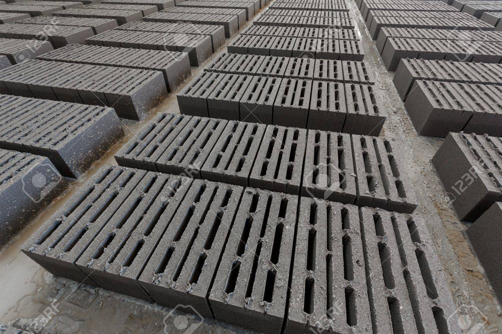
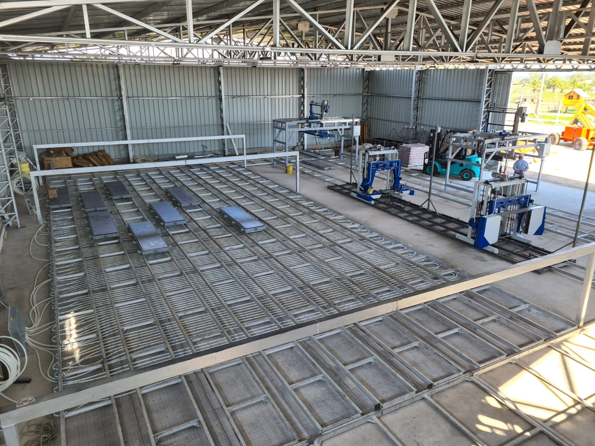

¿Quiénes somos?
En Bloquemanía, nos dedicamos a proporcionar soluciones de construcción de alta calidad y duraderas utilizando los mejores prefabricados de hormigón. Con una experiencia de más de dos décadas en la industria, nos enorgullecemos de ofrecer productos innovadores y personalizables para proyectos residenciales y comerciales.
|  | Fundada en 1999, Bloquemanía ha evolucionado de ser una pequeña fábrica local a convertirse en un referente nacional en la industria de prefabricados de hormigón. A lo largo de los años, hemos perfeccionado nuestras técnicas y procesos de producción para brindar productos de la más alta calidad y soluciones de construcción eficientes. Nuestro equipo de expertos en prefabricados trabaja con un enfoque meticuloso en la calidad, la eficiencia y la satisfacción del cliente. Nos comprometemos a brindar un servicio excepcional y a superar las expectativas de nuestros clientes en cada proyecto que emprendemos. |
En Bloquemanía, valoramos la integridad, la innovación y la excelencia en todo lo que hacemos. Nuestra pasión por la construcción sostenible y resistente nos impulsa a seguir siendo líderes en la industria de prefabricados de hormigón, proporcionando soluciones confiables y asequibles para proyectos de cualquier escala y complejidad. |
 |